Proyecto de muestra
Créditos
Las fotos de esta demo son de banco, con licencia que permite uso comercial (Creative Commons CC0, CC BY y CC BY-SA), encontradas en Openverse. Son fotos de referencia: no muestran los productos de ningún negocio real y se cambiarán por las fotos del cliente. Las licencias BY piden citar al autor; las BY-SA, además, compartir la versión adaptada con la misma licencia.
Fotografías
| Miniatura | Dónde se usa | Autor | Licencia | Origen |
|---|---|---|---|---|
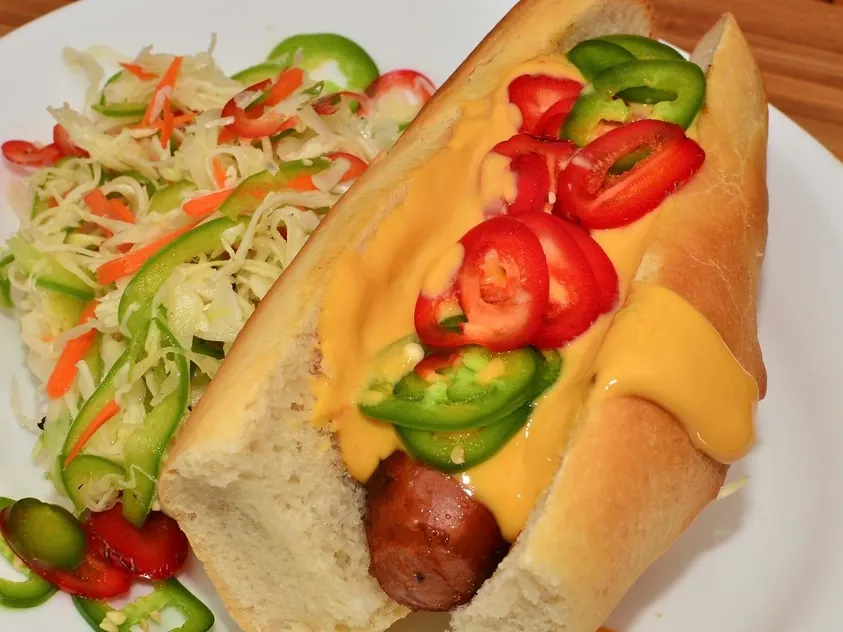 | Perro Zampa Mmm... hot dog with cheese sauce | jeffreyw | CC BY 2.0 | Ver original Recortada y convertida a WebP |
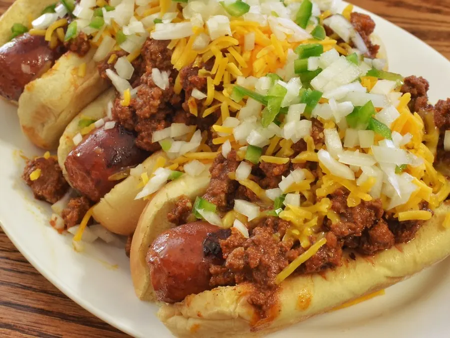 | Perro Chili Mmm... chili cheese dogs | jeffreyw | CC BY 2.0 | Ver original Recortada y convertida a WebP |
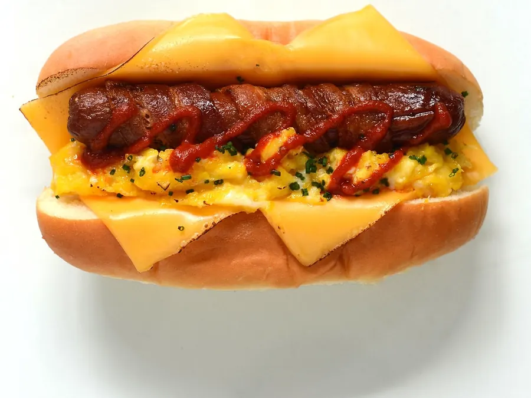 | Perro Con Todo Breakfast Hot Dog bacon wrapped scrambled eggs american cheese Sriracha chives Hawaiian bu | PersonalCreations.com | CC BY 2.0 | Ver original Recortada y convertida a WebP |
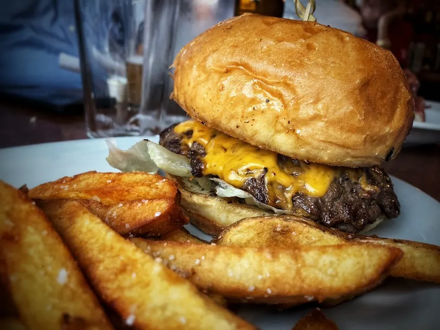 | Zampa Clásica Pub Burger - Burns Pub & Restaurant - Broomfield, CO | vwcampin | CC BY 2.0 | Ver original Recortada y convertida a WebP |
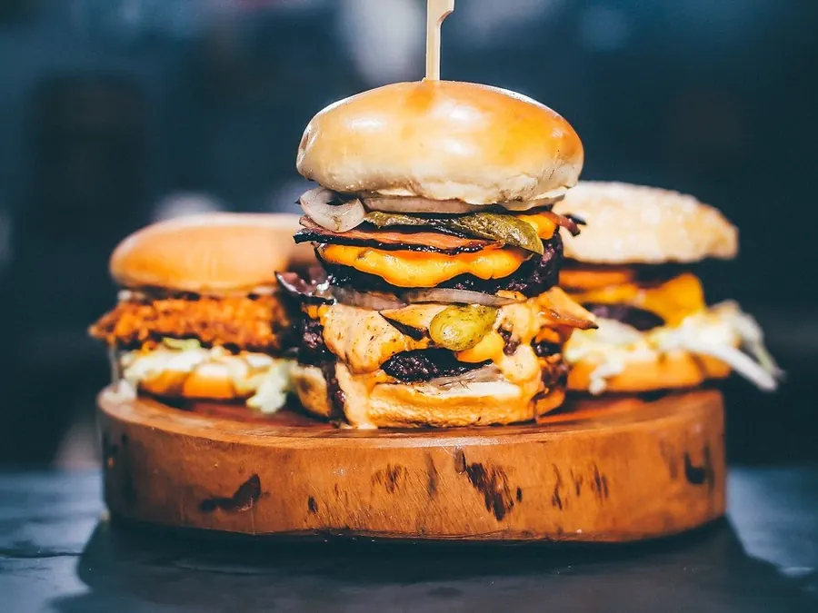 | Doble Bulla Close up photography of hamburger - Credit to https://homegets.com/ | homegets.com | CC BY 2.0 | Ver original Recortada y convertida a WebP |
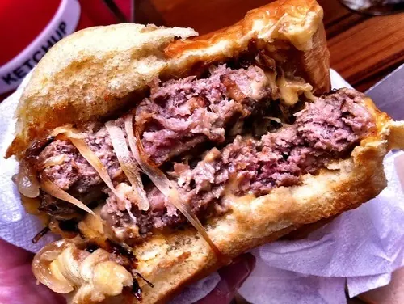 | La Cebollona Double Bacon Cheeseburger Slider @ marks | pellesten | CC BY 2.0 | Ver original Recortada y convertida a WebP |
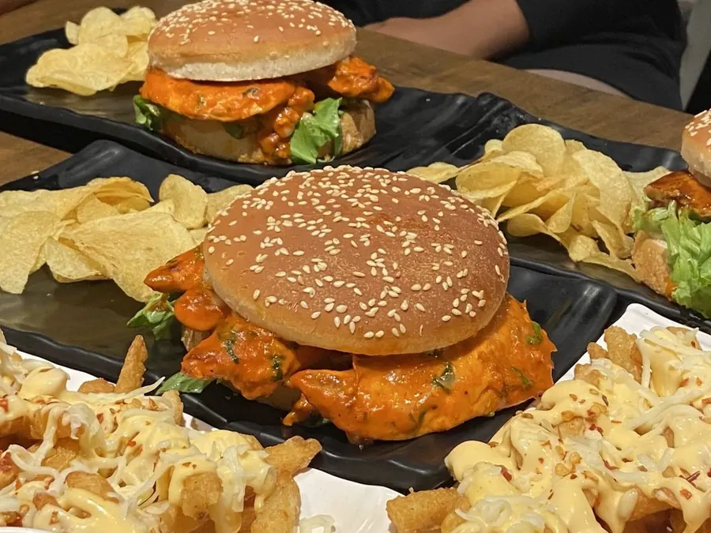 | Pollo Crocante A wooden table holds two plates with sesame seed burgers—one with chicken, the other with | Aditya Pratap Singh | CC CC0 1.0 | Ver original Recortada y convertida a WebP |
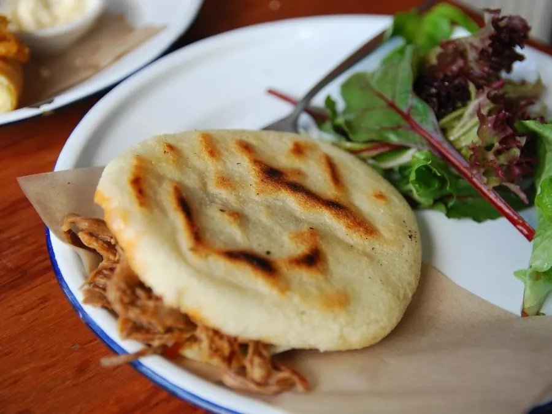 | Arepa de Desmechada Shredded Beef Arepa - Cruzao Arepa Bar AUD9 | avlxyz | CC BY-SA 2.0 | Ver original Recortada y convertida a WebP (la versión adaptada se comparte bajo la misma licencia CC BY-SA) |
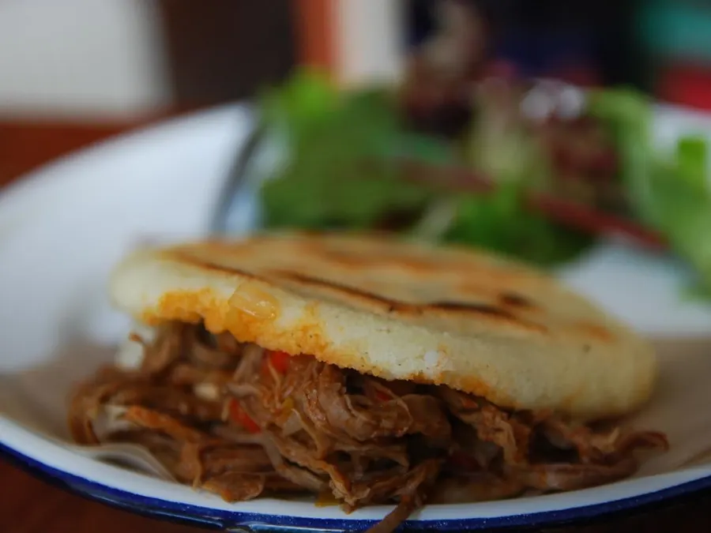 | Arepa Mixta Filling - Shredded Beef Arepa - Cruzao Arepa Bar AUD9 | avlxyz | CC BY-SA 2.0 | Ver original Recortada y convertida a WebP (la versión adaptada se comparte bajo la misma licencia CC BY-SA) |
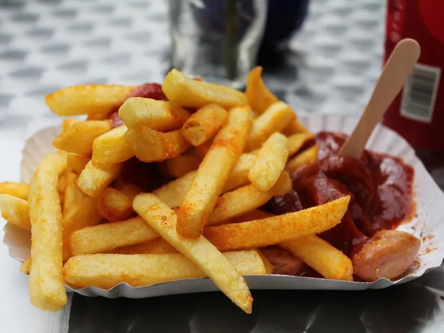 | Salchipapa Callejera Free curry sausage image | Autor no indicado | CC CC0 1.0 | Ver original Recortada y convertida a WebP |
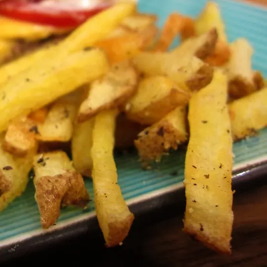 | Papas a la francesa The world's best sliders & fries | Ross Catrow | CC BY-SA 2.0 | Ver original Recortada y convertida a WebP (la versión adaptada se comparte bajo la misma licencia CC BY-SA) |
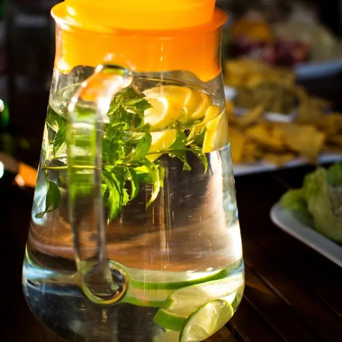 | Limonada de hierbabuena Water lemon mint jug | Jakub Kapusnak | CC CC0 1.0 | Ver original Recortada y convertida a WebP |
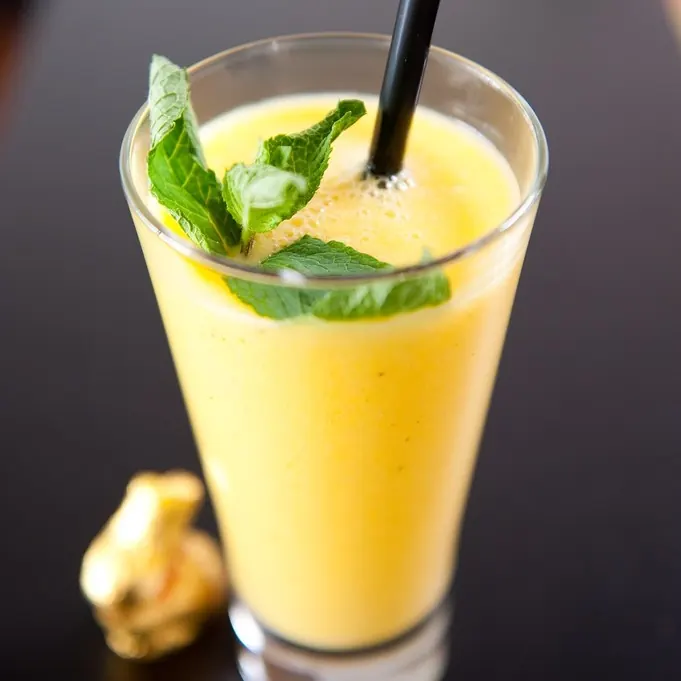 | Jugo de mango en leche mango dream | Matthias Rhomberg | CC BY 2.0 | Ver original Recortada y convertida a WebP |
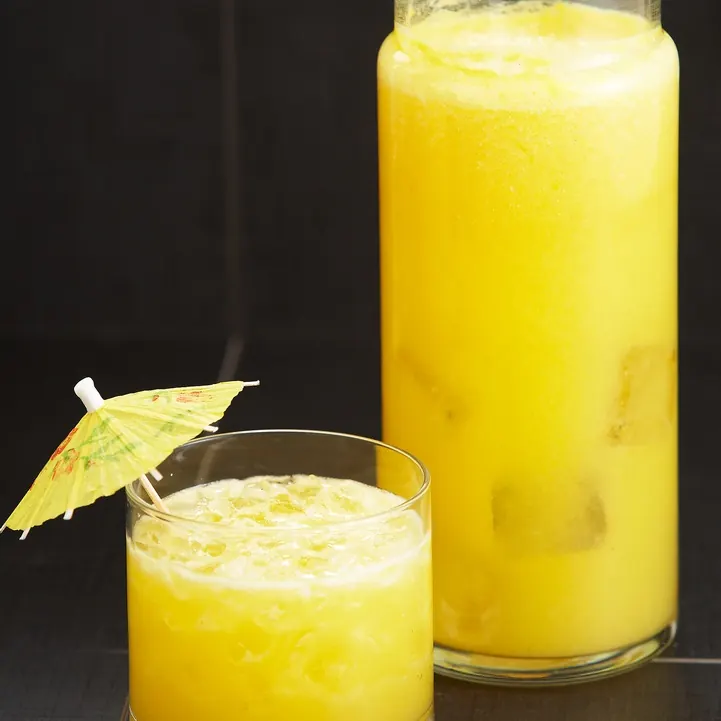 | Jugo de maracuyá en agua Coconut Pineapple Colada_02of4 | Breville USA | CC BY 2.0 | Ver original Recortada y convertida a WebP |
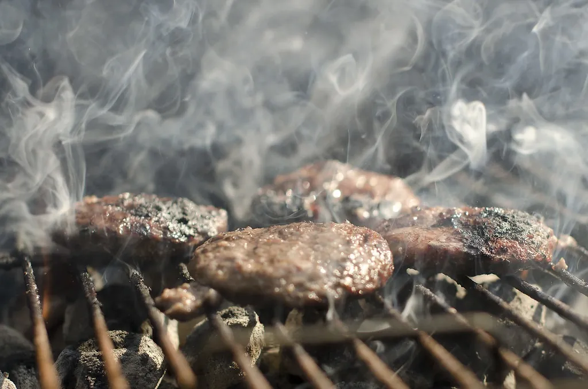 | Sección «La pregunta» (foto a sangre) Grilling Burgers | Valters Krontals | CC BY 2.0 | Ver original Recortada y convertida a WebP |
Los productos sin foto (arepa de choclo, salchipapa con todo, adicionales y gaseosa) usan ilustraciones propias de esta web.
Imagen generada con IA
La hamburguesa de la portada (entera y por capas) es una imagen generada con inteligencia artificial (Higgsfield, modelo GPT Image 2.6) para esta demostración. No es una foto de un producto real; en la web de un negocio se cambia por fotos de su propia hamburguesa.
Tipografías y código
- Big Shoulders Display, Figtree y DM Mono — Google Fonts, licencia SIL Open Font License.
- Three.js 0.147 — licencia MIT. Vapor y chispas de la portada hechos con código propio.